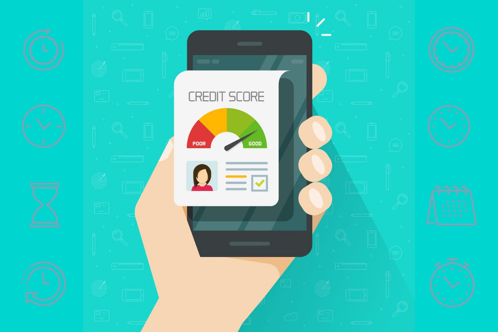

Tecredita es un crédito digital para micro y pequeñas empresas de Chiclayo. Solicítalo desde cualquier lugar y obtén el capital que necesitas para abastecer tu negocio, mejorar tu local o aprovechar una nueva oportunidad.
Características de Tecredita
Para trabajadores independientes de 25 a 55 años
Está pensado para trabajadores independientes y dueños de micro y pequeñas empresas de entre 25 y 55 años que necesitan capital para su actividad. El crédito se adapta a personas con ingresos variables y necesidades de corto o mediano plazo.
Solicitud 100% online
Todo el proceso se realiza por internet: completas tus datos, adjuntas los documentos y recibes la evaluación sin acudir a una agencia. Así ahorras tiempo y puedes solicitar el crédito desde tu negocio o desde tu casa.
Plazos de financiamiento de 1 a 6 meses
Puedes elegir un plazo de 1 a 6 meses según tu capacidad de pago. Un plazo corto reduce los intereses; uno más largo permite organizar mejor el flujo de caja. Elige la opción que mejor se ajuste a tu negocio.
Financiamiento desde S/ 500 hasta S/ 3,000
El monto va desde S/ 500 hasta S/ 3,000. Puedes usarlo para comprar inventario, pagar proveedores, mejorar el local o cubrir una necesidad puntual del negocio.
Buen comportamiento de pago

Mantener tus cuotas al día y no tener deudas vencidas te ayuda a acceder a mejores condiciones. Un buen historial de pago demuestra responsabilidad y facilita futuras solicitudes.
¿Para qué sirve un crédito PYME?
Un crédito PYME permite cubrir necesidades de capital de trabajo, comprar inventario, renovar equipos o atender una oportunidad de crecimiento sin descapitalizar el negocio. En Tecredita, el proceso es digital y los plazos se adaptan a la capacidad de pago del emprendedor.
Audio para relajarse
Después de conocer cómo funciona el crédito PYME, puedes escuchar este audio para relajarte.